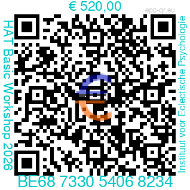

Heart-Assisted Therapy
{{ what-is-hat }}
Hoe het begon : oorsprong van de H.A.T.
De Heart Assisted Therapy ©.
Hoe het begon.
Ik leerde John Diepold kennen in 2005 tijdens een seminarie in Utrecht. Wat mij opviel, was zijn originele manier om aan psychotherapie te doen. Fascinerend vond ik vooral zijn manier van kijken naar psychologische evolutie. Hoewel John heel wat theorieën uit de psychologie in zijn achterhoofd heeft, behoudt hij de nieuwsgierigheid van een kind. Het is zoals een kunstenaar, die naar de wereld kijkt vanuit een onbevangen verwondering.
Deze bijna kinderlijke nieuwsgierigheid gaf hem de inspiratie om zijn nieuwe methode te ontwikkelen. Hij heeft een echte ontdekking gedaan: de energie van het hart hanteren in het therapeutisch proces. Bovendien integreerde hij als psycholoog zijn rijke kennis van 30 jaar uit meerdere psychotherapeutische methoden om een uitgebalanceerde werkwijze te ontwikkelen.
De fundamenten van de Heart Assisted Therapy : de Hart-Brein-Connectie.
De ontdekking van de hart-brein-connectie was dè sleutel tot de ontwikkeling van de H.A.T. John Diepold werkte eerst jarenlang met 'klassieke' psychotherapeutische methoden : cognitieve therapie, experiëntieel (Carl Rogers), Gestalttherapie, Focusing (Gendlin), en met de hypnose van Milton Erickson, mindfullness, EMDR en ook TFT (Thought Field Therapy).
Maar… toen hij het hart betrok in het psychotherapeutisch proces, ontstond er opeens een nieuwe dynamiek bij zijn cliënten. Hij ondervond dat, toen hij de handen kruiselings op het hart liet leggen, het proces van de cliënt kon verdiepen en bevorderen. Dit betekende een doorbraak en tegelijk een paradigma-shift.
De effectiviteit van de H.A.T. blijkt uit :
A. Een aantal case-studies (*). De effectiviteit van H.A.T. is aangetoond door een aantal case-studies. En een belangrijk aspect van vergelijking met EMDR en Cognitieve gedragstherapie is het minder extreme optreden van hevige angsten en fysieke arousal tijdens het therapeutisch proces. Vooral bij traumaverwerking, intense angst of verdriet is dit een ontegensprekelijk voordeel.
B. Wetenschappelijk onderzoek : zie:
Onderzoeksartikel (PDF)
Clinical effectiveness of an integrative psychotherapy technique for the treatment of trauma: A phase I investigation of Heart Assisted Therapy — John H. Diepold Jr., Gary E. Schwartz.
43 patiënten werden behandeld door 2 afzonderlijke psychologen. Er werden 81 specifieke traumatische levensgebeurtenissen behandeld. Het gemiddeld stressniveau bedroeg 7,55 vóór HAT en 0,00 na HAT (n=13; p < .0000001). (= Compacte samenvatting).
(*) Zie het Boek: 'Heart Assisted Therapy. Integrating Heart Energy to Facilitate Emotional Health, Healing, and Performance Enhancement.' © John Diepold, Outskirts Press Inc., 2018. ISBN 978-1-4787-8653-5. In dit boek worden 25 cases besproken.
Available as paperback or online: www.outskirtspress.com/HeartAssistedTherapy
Website van de originator John Diepold: www.heartassistedtherapy.net

Cases : zie hierboven het boek van John Diepold, waarin 25 cases uitvoerig worden besproken.
Tien redenen om de H.A.T. te leren als psychotherapeut:
Hier vind je 10 redenen om met de H.A.T. te leren werken:
- Snel aan te leren, in twee dagen
- Toepasselijk voor de meeste emotionele en psychische problemen.
- Reduceert gelijktijdig: storende intense emoties, piekergedachten en fysische gewaarwordingen.
- Krachtig en efficiënt voor psychotrauma, depressie en angsten en nuttig bij verslaving en OCD.
- Weinig intense arousal tijdens de sessie, wat vooral nuttig is bij psychotrauma.
- Tijdsbesparend en toch diepgaand.
- Combineerbaar met elke psychotherapeutische benadering.
- Leidt tot meer emotioneel evenwicht, innerlijke rust en verbeterd zelfvertrouwen.
- Blijvend resultaat.
- Aangenaam om als psychotherapeut mee te werken.

Doelstellingen van de workshop: Wat leert de deelnemer ?
- Oorsprong en theoretische basis van de H.A.T. kennen.
- Het basisprotocol kennen.
- De H.A.T. tijdens het practicum kunnen toepassen als therapeut.
- De H.A.T. in de rol van cliënt ervaren tijdens het practicum.
- Observaties en ervaringen bespreken.
- De H.A.T. kunnen toepassen in de eigen praktijk als psychotherapeut.
Basic Workshop H.A.T. - Praktisch
1. Doelstelling
Tijdens de Basic Workshop leert u het protocol van de HAT Awareness Streaming aan, zodat u er onmiddellijk mee aan de slag kan met uw cliënten.
2. Methodologie.
De opleiding is interactief. Theoretische uiteenzettingen worden afgewisseld met video's en praktische oefeningen om het protocol te leren gebruiken.
3. Doelgroep
De opleiding richt zich tot klinisch psychologen, psychiaters, orthopedagogen, liefst met een opleiding tot psychotherapeut (minstens opgestart) in één van de mainstream-psychotherapeutische methoden, en met minstens 3 jaar ervaring als psychotherapeut met cliënten. Aansluiting bij een beroepsvereniging met een ethische beroepscode is vereist.
Erkenning: de HAT werd in 2012 door de APA (American Psychological Association) als opleiding erkend. In het verleden heeft het Nederlands Instituut voor Psychologen accreditatie verleend.
4. Programma
• Oorsprong van de Heart Assisted Therapy en van de verschillende therapeutische oriëntaties, waarop de HAT gebaseerd is, met daarbij de mind-body connectie en de hart-brein-wisselwerking.
• Aanleren van het protocol via demo en oefeningen : Exploreren van het probleem en het zoeken naar de behandelfocus - Hartademhaling - Acceptatiezinnen - Volledig protocol van de HAT-awareness - Future Performance Imagery - Huiswerkprotocol.
5. Terugkomdag met supervisie:
Een terugkomdag is verplicht met het oog op uitdieping van het protocol en met ruimte voor supervisie om feedback te bekomen over uw werkwijze. Deze tweede dag wordt ongeveer vier maanden later georganiseerd in groep.
Daarnaast is supervisie ook individueel mogelijk (meestal online).
6. Locatie
Adres: 'Friday cowork', Lange Leemstraat 358b, 2018 Antwerpen, op 7 minuten wandelen van Station Antwerpen-Berchem. Wegbeschrijving: Ga naar buiten langs de achterkant van Station Berchem, draai rechtsaf en volg de spoorweg gedurende ongeveer 500 m, en ga linksaf in de Lange Leemstraat nr. 358b.
Website: https://www.antwerpen.be/zaal/friday-antwerpen-berchem-meetingspace
De trein is het meest aan te raden vervoermiddel, gelet op de ligging vlakbij het station en het ontbreken van files in de spits.
Per auto: U kan eventueel parkeren in de ondergrondse betalende parking onder het station Berchem. De ingang bevindt zich aan het plein voor het station; komende vanuit de Noordersingel en draai voor het plein rechtsaf.
7. Data en dagindeling
Vrijdag in mei of oktober 2026 (datum nog te bepalen) en vrijdag in oktober '26 of februari 2027 (datum nog te bepalen).
Dagindeling : (Deuren 8.30u) van 9 tot 12.30u en 13u tot 17u (incl. koffiepauzes) (totaal 7.30u). Tijdens de middagpauze zijn broodjes voorzien (inbegrepen in de prijs).
8. Prijs
Prijs voor de tweedaagse workshop HAT : 520 € (550 € vanaf 1 maand voor de datum),
Inbegrepen: syllabus, lichte lunch (broodjes) en alle koffiepauzes.
De deelnemer ontvangt een bewijs van betaling en na afloop een deelname-attest.
9. Inschrijving en betaling
Om in te schrijven voor de workshop vult u het bijgevoegd inschrijvingsformulier in en stuurt het via mail als bijlage op. Pas als de betaling is uitgevoerd, is de inschrijving definitief en wordt ze door ons bevestigd.
Voor de betaling schrijft u over op het rekeningnummer :
Naam bestemmeling : Instituut voor Eclectische Psychologie
met vermelding: "HAT Basic Workshop 2026 + Volledige naam"
Betaling kan ook met QR-code:

Scan met uw bankapp om te betalen. Vergeet niet uw volledige naam te vermelden als mededeling.
10. Annulatie: enkel schriftelijke annulatie (mail of brief) wordt aanvaard.
| Tijdstip van annulatie | Terugbetaling |
|---|---|
| Tot 1 maand vooraf | 100% terugbetaald |
| Tot 14 dagen vóór de workshop | 50% terugbetaald |
| Minder dan 14 dagen vooraf | Geen terugbetaling mogelijk |
11. Inschrijvingsformulier
Kies hoe u het inschrijvingsformulier wil invullen en verzenden:
Vul het formulier in via uw browser.
Uw gegevens worden
automatisch doorgestuurd.
Opent uw e-mailprogramma met het formulier
al ingevuld. Vul aan
en klik op Verzenden.